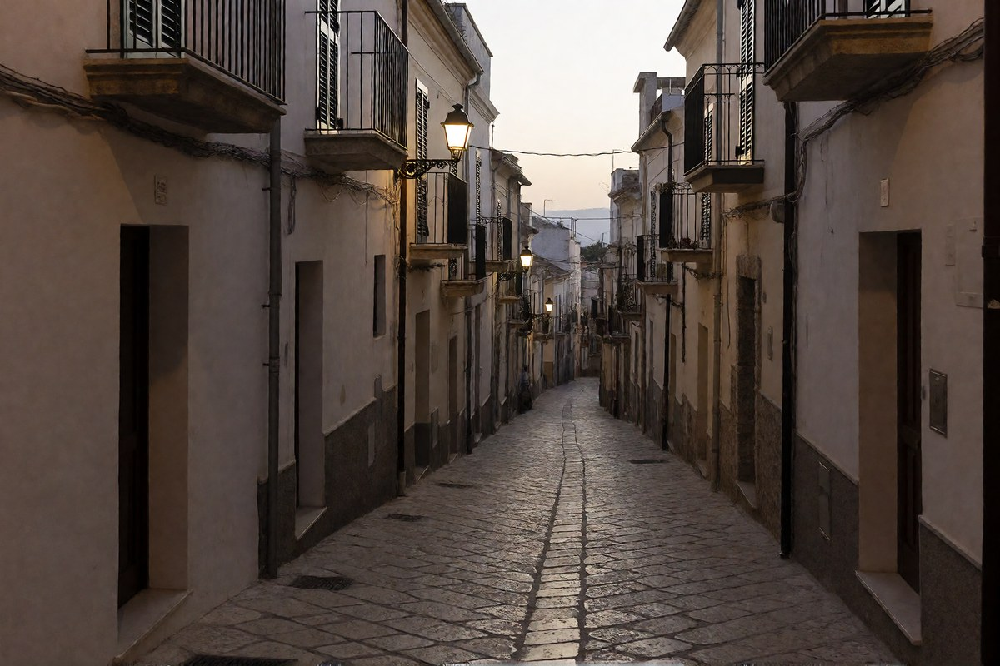

Mafia e antimafia · 13 novembre 2026
Fratelli Merlino uccisi nel 2013, un arresto 13 anni dopo nel Catanzarese

Per la Direzione distrettuale antimafia di Catanzaro sono due delitti di 'ndrangheta. L'accusa: avere fornito le armi, segnalato le vittime e garantito la fuga dopo gli agguati.
di Franco Zanghì
Venerdì 13 novembre 2026 i carabinieri del Nucleo investigativo del Comando provinciale di Catanzaro hanno notificato, nel carcere di Trapani, un'ordinanza di custodia cautelare in carcere firmata dal giudice per le indagini preliminari su richiesta della Direzione distrettuale antimafia. Il destinatario è un uomo già detenuto per altra causa.
L'accusa riguarda due omicidi commessi nell'autunno del 2013 nel Catanzarese, a poche settimane di distanza l'uno dall'altro, e per la Dda sono delitti di 'ndrangheta.
I due agguati
Girifalco, 5 settembre 2013. In corso Migliaccio, nel centro del paese, arriva una moto con due uomini a bordo. Uno guida, l'altro imbraccia una mitraglietta e spara numerosi colpi contro Luciano Merlino, che muore. La moto sarà poi ritrovata bruciata nelle campagne.
Caraffa di Catanzaro, 21 ottobre 2013, a pochi chilometri di distanza. Il fratello, Massimo Merlino, si trova in un circolo ricreativo per anziani. Arrivano in due, ancora in moto: uno entra e spara con una pistola. Massimo Merlino verrà colpito e morirà il 18 novembre.
Che cosa contesta l'accusa
All'uomo raggiunto dall'ordinanza si contesta di avere avuto un ruolo, in concorso con altre persone, in entrambi gli omicidi, aggravati per l'accusa dalla premeditazione e dalle finalità e modalità mafiose. Secondo gli inquirenti avrebbe messo a disposizione le armi, segnalato agli esecutori dove si trovavano le vittime e garantito la fuga dopo gli agguati.
Il movente nella ricostruzione dell'accusa
Nella ricostruzione degli inquirenti, i fratelli Merlino erano entrati in contrasto con una cosca che la Dda colloca a Borgia, per il controllo delle estorsioni e delle intimidazioni agli imprenditori: avrebbero cercato di muoversi da soli. Il secondo delitto sarebbe stato deciso anche per prevenire una vendetta, perché Massimo avrebbe attribuito a quella cosca la morte del fratello.
L'indagine si basa anche sulle dichiarazioni di 2 collaboratori di giustizia che, secondo gli inquirenti, erano direttamente coinvolti nei due omicidi.
Il punto
L'uomo raggiunto dall'ordinanza è da considerarsi innocente fino a sentenza definitiva, e la ricostruzione dell'accusa dovrà essere verificata nel confronto con la difesa, che alla data di pubblicazione non aveva rilasciato dichiarazioni pubbliche.
Resta il tempo trascorso: 13 anni fra due agguati in un paese di poche migliaia di abitanti e la prima contestazione a chi, per l'accusa, mise le armi in mano ai killer.
Fonti
- ANSA Calabria, «Fratelli uccisi nel 2013 per contrasti tra cosche, un arresto», 13 novembre 2026
- Corriere della Calabria, «I fratelli Merlino uccisi nel 2013 in una guerra di 'ndrangheta nel Catanzarese», 13 novembre 2026
- Catanzaro Channel / LaC News24, ricostruzione dei due agguati, 13 novembre 2026
- Sky TG24, servizio video sull'arresto, 13 novembre 2026
Quanto riportato è l'ipotesi di accusa contenuta in un'ordinanza di custodia cautelare: per la persona raggiunta dal provvedimento vale la presunzione d'innocenza fino a sentenza definitiva. Il nome non viene riportato in assenza di una contestazione definitiva. Versione scritta della notizia uscita sui canali dell'autore il 16 novembre 2026.
Questo articolo nasce dalla pagina Gli Eroi dell'Abisso, dove la stessa storia è raccontata in video.